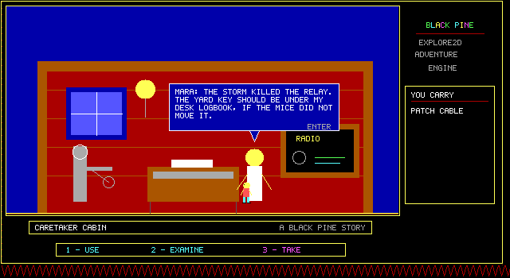
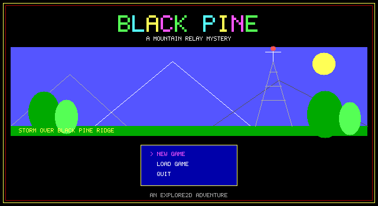
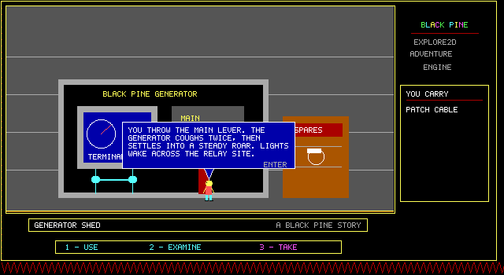
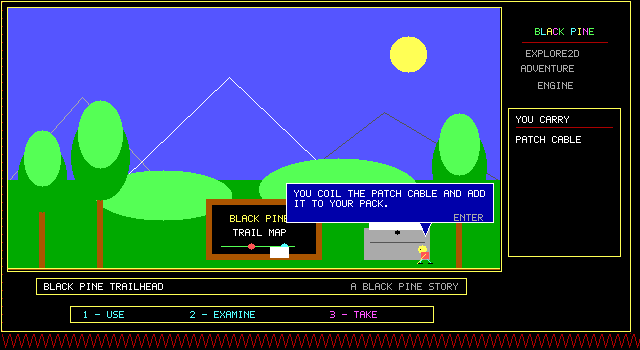

01
Connected scenes
Build non-scrolling rooms with explicit exits, spawn points, solids, hazards and discovered fast-travel anchors.
RoomDefinition
C++23 · CNA · MIT licensed
Explore2D is a focused engine for exploration adventures made from connected rooms, meaningful objects and persistent choices. It turns the economical language of classic QBasic games into a clean, testable C++ API.

The adventure grammar
Explore2D owns the recurring mechanics, so each game can spend its code on places, puzzles and story.
01
Build non-scrolling rooms with explicit exits, spawn points, solids, hazards and discovered fast-travel anchors.
RoomDefinition
02
Combine a verb, target, optional item and conditions. Then emit dialogue and mutations without hard-coded room classes.
InteractionRule
03
Inventory, flags, counters and visited rooms make examination and collection change the world rather than merely decorate it.
AdventureSession
04
Loop a beacon or trigger a short repair sequence. Animation is available where it matters; static scenery stays economical.
SceneAnimationDefinition
05
World rules, saving and the CPU renderer form a CNA-independent core. Test complete puzzle routes without a window or GPU.
Explore2D::Core
06
Describe monophonic square-wave effects as QBasic SOUND frequency and timer-tick pairs; the CNA host handles playback.
ToneEffectDefinition
07
Translate every player-facing value, switch language from title or pause settings, and keep the preference between launches.
LocalizedText
The visual system
Every Explore2D game accepts the same 640×350 canvas, 492×262 room viewport, 16-colour EGA palette and shared adventure interface. Different worlds still feel like they belong to the same machine.



Quickstart
Keep Explore2D next to your game, link the core, describe the world in ordinary C++, then add the CNA host when you want a playable desktop build.
Include Explore2D as a CMake subdirectory and link the headless core.
set(EXPLORE2D_SOURCE_DIR
"${CMAKE_CURRENT_SOURCE_DIR}/../explore-2d")
add_subdirectory("${EXPLORE2D_SOURCE_DIR}"
"${CMAKE_BINARY_DIR}/_deps/explore2d")
target_link_libraries(my_game
PRIVATE Explore2D::Core)Coordinates are local to the 492×262 room viewport. Art, collision and hotspots share that space.
namespace e2d = explore2d;
e2d::WorldDefinition world;
world.title = "My Adventure";
world.startRoom = "foyer";
e2d::RoomDefinition foyer;
foyer.id = "foyer";
foyer.label = "OLD FOYER";
foyer.background = e2d::PaletteColor::blue;
foyer.defaultSpawn = {32, 232};
foyer.solids.push_back({0, 260, 492, 28});
e2d::Drawing{}.origin({80, 210})
.rectangle({-3, -30, 6, 30},
e2d::PaletteColor::brown)
.polygon({{-24, -24}, {0, -72}, {24, -24}},
e2d::PaletteColor::green)
.appendTo(foyer.decorations);A rule matches player intent and turns it into dialogue plus persistent state changes.
world.addItem({
"key", "BRASS KEY", "Cold and heavy.", true});
foyer.hotspots.push_back({
"key_pickup", "BRASS KEY", {190, 210, 50, 50},
e2d::HotspotKind::item,
{e2d::Condition::notFlag("key_taken")}, {}});
world.addRoom(std::move(foyer));
world.addInteraction({
e2d::Verb::take, "key_pickup", std::nullopt, {},
{{"You take the brass key.",
e2d::MessageStyle::inspect}},
{e2d::Mutation::addItem("key"),
e2d::Mutation::setFlag("key_taken")},
10, "take_key_once"});
return world;The core needs no CNA checkout. Use it for deterministic world and full-route tests.
cmake -S . -B build \
-DEXPLORE2D_BUILD_CNA=OFF
cmake --build build -j
ctest --test-dir build --output-on-failureLink the optional host and configure with a complete CNA checkout when you are ready for the window, keyboard, fullscreen and audio.
explore2d::cna::HostConfig host;
host.windowTitle = "My Adventure";
host.presentationScale = 2;
explore2d::cna::AdventureGame game{
buildWorld(), {}, {}, host};
game.Run();cmake -S . -B build \
-DCNA_SOURCE_DIR=/path/to/cnaArchitecture
Rooms · art · items · rules · localized text
State · actions · saves · indexed canvas
Window · keyboard · texture · audio
The engine does not hide CNA behind a fake platform layer. CNA simply lives at the outside edge, where platform work belongs.
API tour
Everything is ordinary typed C++ data. Stable string IDs keep story-heavy definitions readable and saves independent of memory layout.
WorldDefinitionOwns rooms, items, interactions, languages, sound effects and presentation settings. Call validate() before play.
RoomDefinitionProvides background, procedural decoration, solids, hotspots, animations, hazards, exits and travel metadata.
InteractionRuleMatches verb + target + optional item + conditions, then applies messages, mutations and a sound cue.
AdventureSessionTracks player, inventory, flags, counters, visited rooms, messages, active language and transient actions.
Drawing / CanvasPixels, lines, rectangles, circles, ellipses, arcs, polygons, PAINT, bitmap text and indexed GET/PUT operations.
AdventureRendererDraws rooms, player poses, inventory, verbs, maps, title screen, compact bubbles and terminal states.
LocalizedTextKeeps an English-compatible fallback plus translations resolved at runtime without changing game state.
Selective animation
room.animations.push_back({
"beacon", true, true,
{e2d::Condition::flag("power_on")}, {
{8, {brightBeacon}},
{8, {dimBeacon}},
}});
// For a non-autoplay sequence:
e2d::Mutation::playAnimation("repair")QBasic-style audio
world.addSoundEffect({
"pickup",
{{440, 1}, {660, 1}, {880, 2}},
0.15F
});
world.presentation.sounds.pickup =
"pickup";Speaker-aware dialogue
e2d::Message{
"I found the missing fuse.",
e2d::MessageStyle::speech,
e2d::MessageSpeaker::player
}
// Use MessageSpeaker::target for
// the character at the hotspot.Default host controls
ENTER remains contextual: it operates a nearby character or mechanism, otherwise it jumps.
Developer learning centre
Use the developer guide as a searchable reference, or follow the complete 24-lesson path that grows one small adventure from an empty directory to a tested CNA desktop build.
Architecture, integration, drawing, rooms, rules, dialogue, animation, sound, saves, testing and common patterns.
Open the guide → Guided path · 24 lessons Build Signal CabinA six-module tutorial with concrete checkpoints, exercises, code samples and progress saved in your browser.
Start lesson 1 →Build a place worth examining
Start with one screen, one object and one meaningful state change. The rest of the world can grow from there.